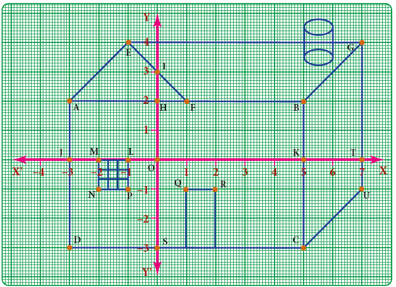
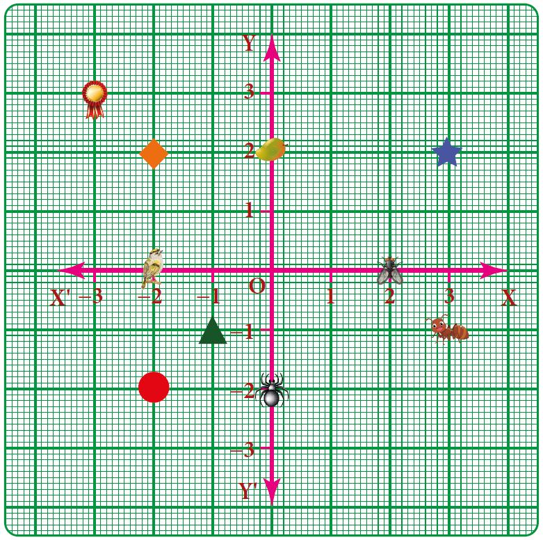
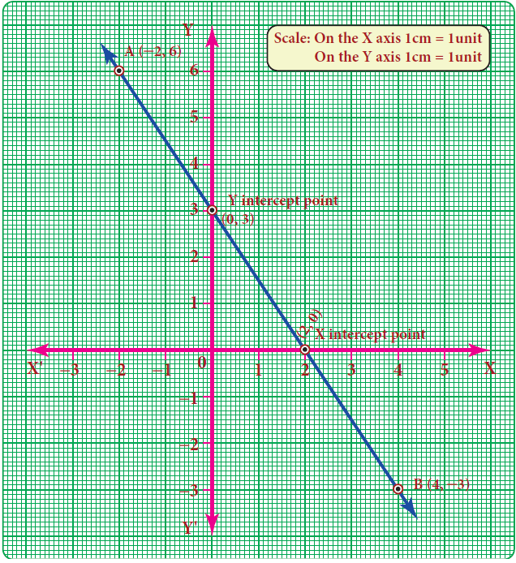
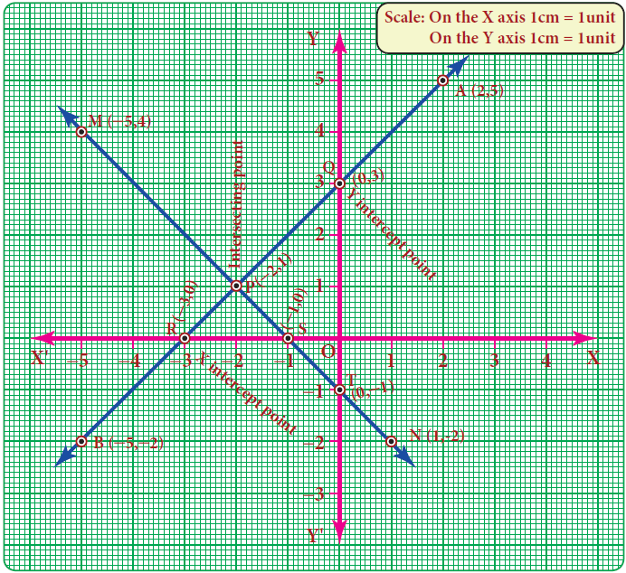
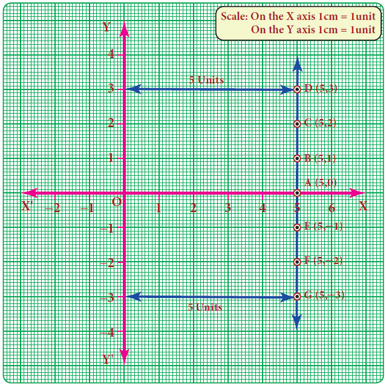
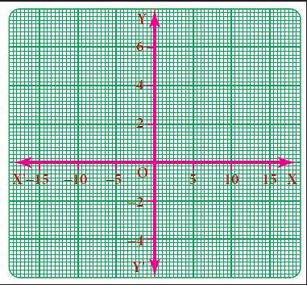
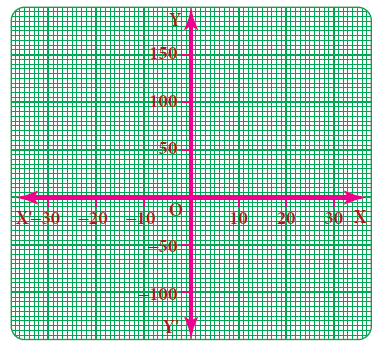
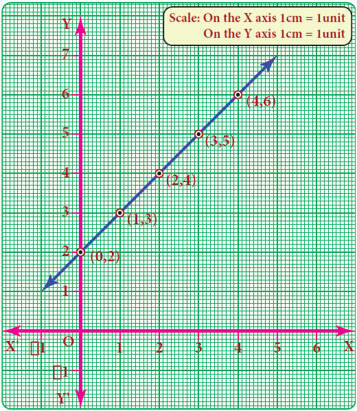
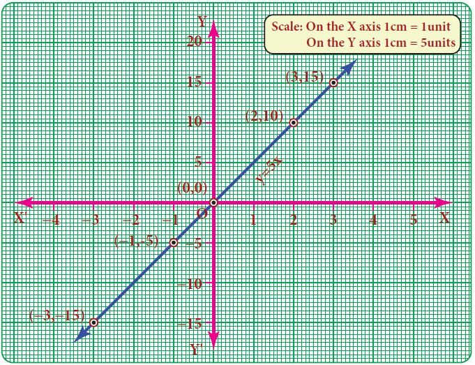
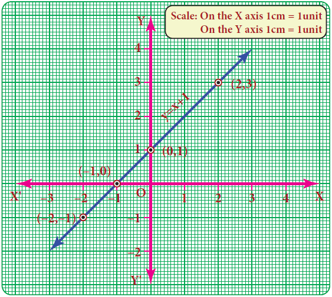

Box item
Try these
1. Complete the table given below.
Serial number |
Point |
Sign of X co ordinate |
Sign of Y co ordinate |
Quadrant |
1 |
open bracket Minus 7 comma 2 close bracket |
|
|
|
2 |
open bracket 10 comma minus 2 close bracket |
|
|
|
3 |
open bracket Minus 3 comma minus 7 close bracket |
|
|
|
4 |
open bracket 3 comma 1 close bracket |
|
|
|
5 |
open bracket 7 comma 0 close bracket |
|
|
|
6 |
Open bracket 0 comma minus 4 close bracket |
|
|
|
2. Write the coordinates of the points marked in the following figure

Exercise 3.8
1 Fill in the blanks:
First one X axis and Y axis intersect at DASH.
Second one The coordinates of the point in third quadrant are always DASH.
Third one Open bracket 0 comma minus 5 close bracket point lies on DASH axis.
Fourth one The x coordinate is always DASH on the y axis.
Fifth one DASH coordinates are the same for a line parallel to Y axis.
Page number 111
2. Say True or False:
First one open bracket minus 10 comma 20 close bracket lies in the second quadrant.
Second one open bracket minus 9 comma 0 close bracket lies on the x axis.
Third one The coordinates of the origin are open bracket 1 comma 1 close bracket.
3. Find the quadrants without plotting the points on a graph sheet.
open bracket 3 comma minus 4 close bracket, open bracket 5 comma 7 close bracket, open bracket 2 comma 0 close bracket, open bracket minus 3 comma minus 5 close bracket, open bracket 4 comma minus 3 close bracket, open bracket minus 7 comma 2 close bracket, open bracket minus 8 comma 0 close bracket, open bracket 0 comma 10 close bracket, open bracket minus 9 comma 50 close bracket.
4. Plot the following points in a graph sheet.
A open bracket 5 comma 2 close bracket, B open bracket minus 7 comma minus 3 close bracket, C open bracket minus 2 comma 4 close bracket, D open bracket minus 1 comma minus 1 close bracket, E open bracket 0 comma minus 5 close bracket, F open bracket 2 comma 0 close bracket, G open bracket 7 comma minus 4 close bracket, H open bracket minus 4 comma 0 close bracket, I open bracket 2 comma 3 close bracket, J open bracket 8 comma minus 4 close bracket, K open bracket 0 comma 7 close bracket.
5. Use the graph to determine the coordinates where each figure is located.

Now, we know how to plot the points on the graph. The points may lie on the graph in different order. If we join any two points, we will get a straight line.
Example 3.41
Draw a straight line by joining the points A open bracket minus 2 comma 6 close bracket and B open bracket 4, minus 3 close bracket
Solution:
The given first point A open bracket minus 2 comma 6 close bracket lies in the second quadrant and plot it. Second point B open bracket 4 comma minus 3 close bracket lies in the fourth quadrant and plot it.
Now join the point A and point B using scale and extend it. We get a straight line.
Note:
The straight line intersects X axis at open bracket 2 comma 0 close bracket and Y axis at open bracket 0 comma 3 close bracket.
Page number 112

Example 3.42
Draw straight lines by joining the points A open bracket 2 comma 5 close bracket B open bracket minus 5 comma minus 2 close bracket M open bracket minus 5 comma 4 close bracket N open bracket 1 comma minus 2 close bracket also find the point of intersection
Solution:
Plot the first pair of points A and B in first and third quadrants. Join the points and extend it to get AB straight line. Plot the second pair of points M and N in second and fourth quadrants. Join the points and extend it to get MN straight line.

Page number 113
Now, both lines are intersect at P open bracket minus 2 comma 1 close bracket
1 The line AB intersect the coordinate axis, that is x axis at R open bracket minus 3 comma 0 close bracket and y axis at Q open bracket 0 comma 3 close bracket
2 The line MN intersect the coordinate axis, that is x axis at S open bracket minus 1 comma 0 close bracket and y axis at T open bracket 0 comma minus 1 close bracket
y is equal to c.
x is equal to k. (Here c and k are constants)
Example 3.43
Draw the graph of x is equal to 5
Solution:
X is equal to 5 means that x coordinate is always 5 for whatever value of y coordinate. So, we may
give any value for y coordinate and this is tabulated as follows.
X |
5 |
5 |
5 |
5 |
5 |
Y |
Minus 2 |
Minus 1 |
0 |
2 |
3 |
x is equal to 5 is given (fixed)
Take any value for y (Why question mark)

The points are open bracket 5 comma minus 2 close bracket open bracket 5,minus 1 close bracket open bracket 5 comma 0 close bracket open bracket 5 comma 2 close bracket open bracket 5 comma 3 close bracket . Plot the points in the graph and join them. We get a straight line parallel to Y axis at a distance of 5 units from the Y axis.
x is equal to 0 represents the Y axis
y is equal to 0 represents the X axis
Which of the points open bracket 5 comma minus 10 close bracket open bracket 0 comma 5 close bracket open bracket 5 comma 20 close bracket lie on the straight line X equal to 5 question mark
There will be situations in drawing a graph where ‘y’ is a big multiple of ‘x’ and the usual graph in units may not be enough to locate the ‘y’ coordinate and vice versa. In this situation,
Page number 114
we use the concept of scale in both the axes as per the need. Represent a convenient scale at the right side corner of the graph. A few examples are given below.
Box item

Example 1
On the X axis 1centimetre is equal to 5 units
On the Y axis 1 centimetre is equal to 2 units

Example 2
On the X axis 1centimetre is equal to 10 units
On the Y axis 1 centimetre is equal to 50 units
Plot the following points on a coordinate plane: open bracket 0 comma 2 close bracket, open bracket 1 comma 3 close bracket, open bracket 2 comma 4 close bracket, open bracket 3 comma 5 close bracket, open bracket 4 comma 6 close bracket. What do you find question mark They all lie on a line! There is some pattern in them. Look at the y coordinate in each ordered
pair: 2 is equal to 0+2; 3 is equal to 1+2; 4 equal to 2+2; 5 is equal to 3+2; 6 is equal to 4+2. In each pair, the y coordinate is 2 more than the x coordinate. The coordinates of each point have the same relationship between them. All the points plotted lie on a line! In such a case, when all the points plotted lie on a line, we say ‘a linear pattern’ exists.
In this example, we found that in each ordered pair y value is equal to x value +2. Therefore, the linear pattern above can be denoted by the algebraic equation y is equal to x + 2. Such an equation is called a linear equation and the line graph for linear equation is called a linear graph.
Box item

Page number 115
Linear equations use one (or more) variables where one variable is dependent on the other(s).
The longer the distance we travel by a taxi, the more we have to pay. The distance travelled is an example of an independent variable. Being dependent on the distance, the taxi fare is called the dependent variable.
The more one uses electricity, greater will be the amount of electricity bill. The amount of electricity consumed is an example for independent variable and the bill amount is naturally the dependent variable.
We have talked about parallel lines, intersecting lines etc., in geometry but never actually looked at how far apart they were, or where they were. Drawing graphs helps us place lines. A linear equation is an equation with two variables (like x and y) whose graph is a line. To graph a linear equation, we need to have at least two points, but it is usually safe to use more than two points. (Why question mark) When choosing points, it would be nice to include both positive and negative values as well as zero. There is a unique line passing through any pair of points.
Example 3.44
Draw the graph of y is equal to 5x
Solution:
The given equation y is equal to 5x means that for any value of x, y takes five times of x value.
Plot the point open bracket minus 3 comma minus 15 close bracket open bracket minus 1 comma minus 5 close bracket open bracket 0 comma 0 close bracket open bracket 2 comma 10 close bracket open bracket 3 comma 15 close bracket
X |
Minus 3 |
Minus 1 |
0 |
2 |
3 |
Y |
Minus 15 |
Minus 5 |
0 |
10 |
15 |
x |
Y is equal to 5x |
Minus 3 |
y is equal to 5 multiply ( Minus of 3) equal to minus 15 |
Minus 1 |
y is equal to 5 multiply ( Minus of 1) equal to Minus 5 |
0 |
y is equal to 5 multiply (0) is equal to 0 |
2 |
y is equal to 5 multiply (2) is equal to 10 |
3 |
y is equal to 5 multiply (3) is equal to 15 |

Page number 116
Example 3.45
Graph the equation y is equal to x + 1. Begin by choosing a couple of values for x and y. It will firstly help to see
(i) what happens to y when x is zero and
(ii) what happens to x when y is zero.
After this we can go on to find one or two more values.
Let us find at least two more ordered pairs. For easy graphing, let us avoid fractional answers. We shall make suitable guesses.

X |
Minus 2 |
Minus 1 |
0 |
1 |
2 |
Y |
Minus 1 |
0 |
1 |
2 |
3 |
x |
Y is equal to x+1 |
Minus 2 |
y is equal to Minus 2+1 is equal to minus1 |
Minus 1 |
y is equal to Minus 1+1 is equal to 0 |
0 |
y is equal to 0+1 is equal to 1 |
1 |
y is equal to 1+1 is equal to 2 |
2 |
y is equal to 2+1 is equal to 3 |